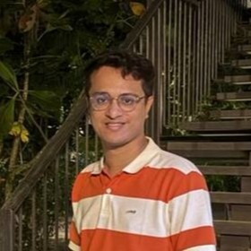

Md. Takrim Hossain
Research Associate, Centre for Policy Dialogue (CPD)
Hello!
I'm Takrim, an Economics graduate from the University of Dhaka and currently a Research Associate at the Centre for Policy Dialogue (CPD).
My research interests lie broadly in development, environmental economics, and public policy. Lately, much of my work has revolved around climate change and the increasingly complicated relationship between trade and the environment. I'm particularly interested in how economic policies respond to a changing world, and how the consequences play out beyond the policy documents.
Research interests
Applied Economics · Development Economics · Environmental Economics · Economic Geography · Climate Change · Political Economy · History of Economic Thought
Beyond research
Outside research, I'm an enthusiastic consumer of music, literature, and pop culture, and a competitive quizzer with national championships under my belt. I have a particular fondness for maps and geography, and can spend an unreasonable amount of time exploring places I haven't been to. I also support Liverpool Football Club, a lifelong commitment that has taught me a thing or two about optimism, uncertainty, and the occasional emotional rollercoaster.
I welcome potential research collaborations. Do get in touch.